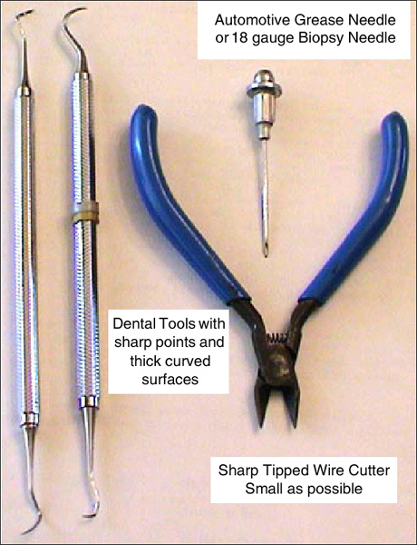

Illustration 1: Emergency Interposer Pin removal tools

Biopsy needles can be found in most medical facilities.
Dental tools can be obtained from most Dentist offices. They regularly discard older utensils.
A grease needle can be purchased at an automotive parts store.